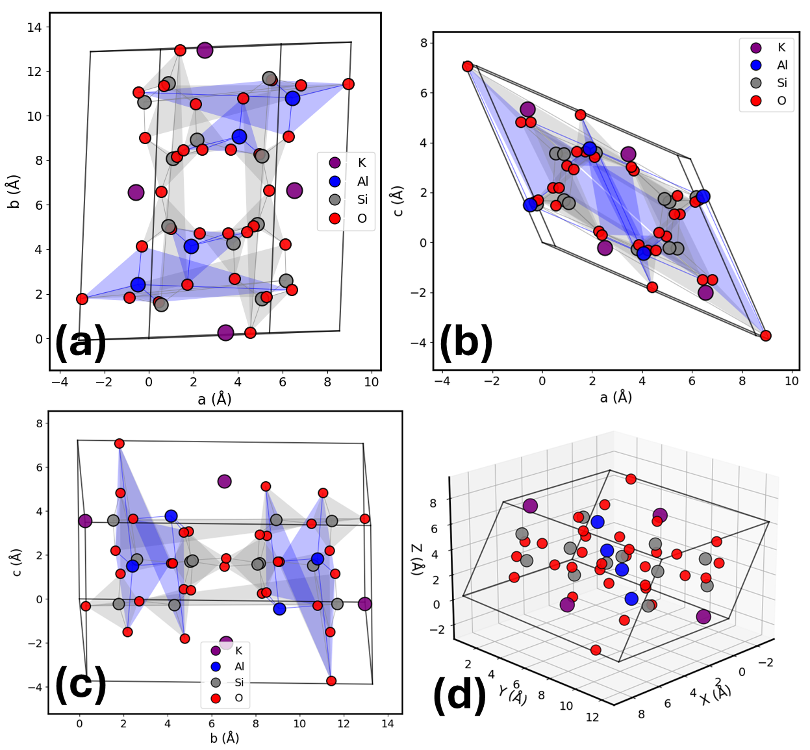
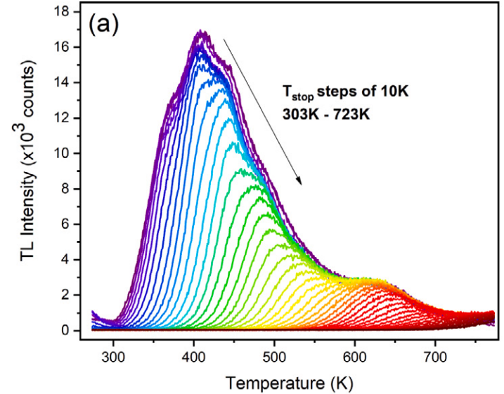

Possui licenciatura em Física pelo Instituto Federal de Educação, Ciência e Tecnologia de São Paulo (IFSP, 2021). Atualmente é mestrando em Física na Universidade de São Paulo (USP), desenvolvendo pesquisas em luminescência de materiais com aplicações em dosimetria das radiações e datação geológica. Atua principalmente nas áreas de Física do Estado Sólido, com tópicos como luminescência de materiais, dosimetria das radiações, datação geológica e caracterização de materiais.

2026 - atualmente: M.Sc. em andamento, Instituto de Física, Universidade de São Paulo (IF-USP);
2021 - 2025: Licenciatura em Física, Instituto Federal de São Paulo (IFSP);